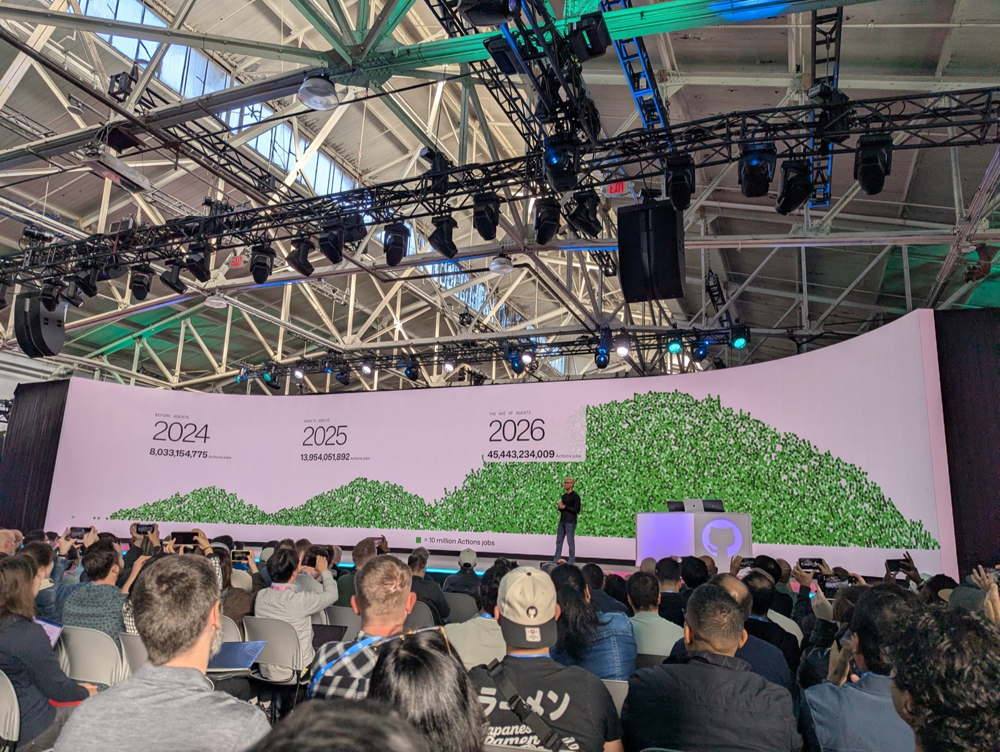
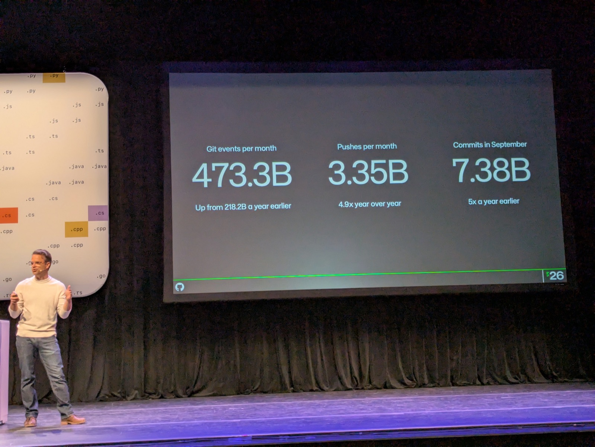

Debrief from the field - GitHub Universe 2026
Two days at Fort Mason for GitHub Universe 2026. Three things worth writing down: the opening keynote's announcements and scale numbers, a breakout on GitHub's own infrastructure rebuild, and a few products from the expo floor worth a second look. Quick shoutout before any of that, though: this year's conference badge is a fully hackable little device with its own open-source repo, built on the Pimoroni Tufty 2350 - firmware, apps, hardware schematics, all of it, right there to fork and flash your own build. 🛠️ A conference badge that's also a dev environment is just a genuinely great idea.
Unfortunately the venue wifi skipped 2.4GHz entirely 🫠, so flashing this thing with something more interesting is going to have to wait until I'm home. (Yes, MicroPython rules.)
1. Opening keynote 🔗

Jay Parikh opened GitHub Universe 2026 with some genuinely wild numbers, not just more people typing more code but agents piling onto the platform too:
- 225M+ developers worldwide, picking up a new one every single second for the second year running
- 34.3B commits, 1.3B pull requests in 2026
- 566M+ open source repos, up 30%+ year over year
Announcements that actually matter:
- Copilot Projects is now generally available to everyone - point it at a goal across several repos, it spins up however many agents it needs on its own (no standalone announcement page found yet - it's folded into the Copilot app's Universe release notes)
- Copilot Fusion - routes a task to whichever model and execution pattern (single pass, cascade, or critique) actually fits - is getting a 30% usage discount through the end of November
- Copilot Code Review picked up a deeper tier, Code Review Max
- The one I think lands hardest for us: GitHub Enterprise customers now get every Copilot feature bundled in, no separate subscription, just pay for the AI credits you actually burn
The back half was all about infrastructure trying to catch up to that growth, and Jay was pretty candid it had been a rough year on that front:
- A rebuilt Git architecture - storage decoupled from compute, locking down to the branch instead of the whole repo, backed by Azure Blob storage - hit 7,200 writes/sec on one repo in testing (180x their old ceiling), rolling out to everyone early next year
- Raw capacity added this year: 4 million CPU cores, 160 petabytes of storage, 50 terabytes/sec of network
- An Azure multi-region migration rolling out alongside the new Git architecture
Jay closed by saying he thinks everything ever built on GitHub so far might only be about 1% of what gets built in the next five years - which is the bet all of this infrastructure work is actually for.
Full talk (42 min): Opening keynote: building the next era of software at GitHub Universe 2026.
2. Scaling GitHub's infrastructure for how developers build today - Brian Celenza 🔗

This one's the real engineering behind the "7,200 writes/sec" number Jay dropped in the keynote, and it's a genuinely good talk. Correction to get right: Spokes itself isn't going anywhere - it's GitHub's existing layer for intelligent request routing, load balancing, and scheduling workload placement across thousands of machines, and it keeps doing exactly that in the new design too. What's actually hitting real limits is the replication and locking scheme underneath it:
- Every repo replicates across a handful of copies - busy repos run 15-21 replicas - and every push needs a quorum of them to agree before it's accepted
- The slowest replica in the quorum sets the speed limit for everyone
- The same replicas also handle compaction and garbage collection on the side, so busy repos get worse on every axis at once
- Reads and writes climb together, and a push amplifies outward - a merge kicks off CI, CI spins up checkouts, agents refresh context off of that - so the real load a push generates is way bigger than the push itself
The new design (private preview now, rolling out broadly early next year) keeps Spokes doing routing and load balancing, but throws out quorum-based whole-repo locking underneath it entirely:
- Disposable, cache-only "virtual replicas" that actually serve traffic
- A small, purpose-built coordination service that only records which commit a branch currently points to - the sole step in the whole pipeline that has to be strictly ordered
- Azure Blob Storage holding the actual object data, written once and never touched again
- A push picks basically any replica at random, writes content straight to Blob storage with no coordination, then does one tiny transaction to move the branch pointer forward
- Reads check that same tiny pointer to know if they're current, then pull whatever they're missing straight from Blob storage
- Compaction and garbage collection got pulled out entirely into their own independent worker pool, continuously tidying Blob storage in the background instead of fighting the replicas serving live traffic
They've tested this to 7,200 writes/sec on one repo, candidly admitted they don't actually know who needs that yet, and are building the headroom anyway because, in Brian's words, they don't know where they are on the growth curve and doubt it's leveling off anytime soon.
What's coming on top of this (also targeted for early next year, some pieces before end of this year) - agent-specific Git APIs:
- Partial/sparse checkouts, so an agent doesn't have to clone a whole repo to touch three files
- An atomic commit API, so it can push without checking anything out first
- Event streams, so agents can subscribe to what's changing on a repo instead of polling it
That's the part that actually matters for scalability going forward: GitHub isn't just scaling the thing agents already do (clone, edit, push), it's trying to remove the parts of that workflow that only exist because Git assumed a human with a full local clone, not a fleet of agents hitting the API. Combined with the keynote's framing and the fact that Cursor and Anthropic are independently reaching the same conclusion (Git-as-is doesn't hold up at agent-driven merge volume, so you either rebuild under it like GitHub is or replace it outright like Anthropic did with its in-house Scion/Antique stack) - this looks like a real, already-shipping response to a real problem, not a slide. Very promising.
3. Products worth a look from the expo floor 🔗
A few things from the expo floor worth keeping an eye on. More to come as I dig in.
StepSecurity
- CI/CD pipeline security for GitHub Actions
- Network egress control and runtime security for Actions runners
- Hardened drop-in replacements for risky third-party actions
- Relevant to our own Actions hardening/SHA-pinning work
Tailscale
- Zero-config, identity-based mesh VPN, built on WireGuard
- Worth a look anywhere we're wiring up private network access between agents, runners, or internal services without standing up a full VPN concentrator
GitProtect.io
- Backup and disaster recovery specifically for GitHub - repos, metadata, LFS
- Point-in-time restore to the original account, a new org, another Git host, or local
- Relevant given we don't currently have an explicit DR story for brk-tech-labs/brk-commons/brk-oss beyond GitHub's own durability